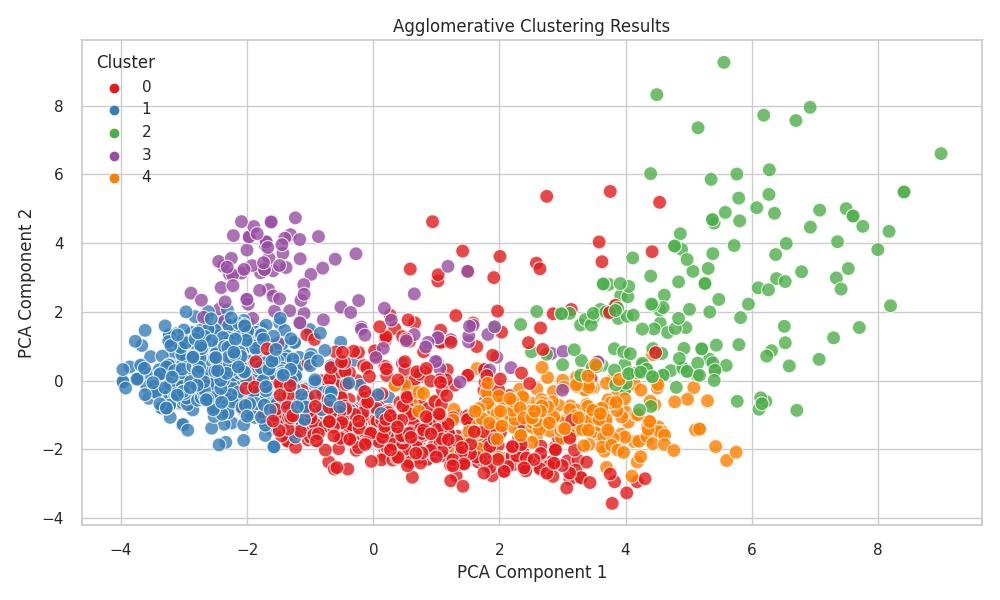
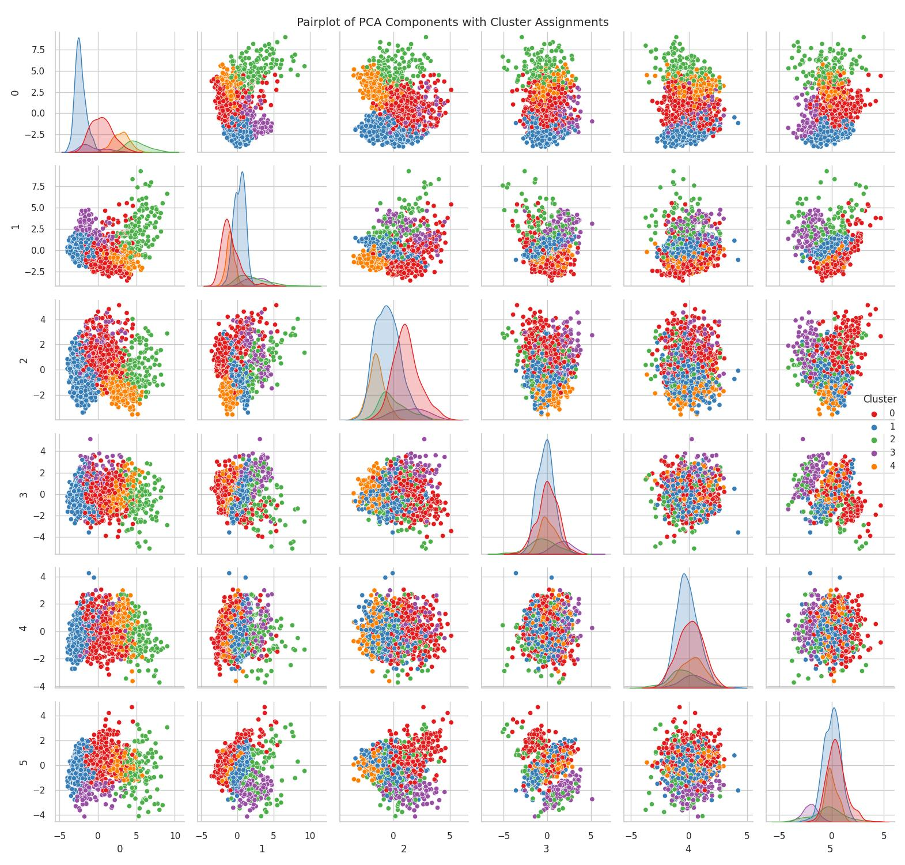

Tabular Data - DATA EVALUATION - CLUSTERING
How to inspect clusters and turn them into groups you can name, including why only the first two PCA components are plotted and how to describe each cluster.
How to look at clusters and turn them into groups you can name. By the end you'll know why we plot only the first two PCA components, and five ways to describe what each cluster is.
You ran the algorithm and got cluster 0, 1, 2. Now what? A cluster number means nothing until you can say who is in it. This page shows the plot first, then how to profile each group.
Table of Content
- Tabular Data - DATA EVALUATION - CLUSTERING
- Table of Content
- Why just plot the first two PCA components?
- Defining Customers Groups from Clusters
Code for this page: clustering.py.
Why just plot the first two PCA components?

Visualizing data in two dimensions (using the first two PCA components) is a common approach because it allows us to create scatter plots that are easy to interpret and provide insights into the data's structure.
These two components typically capture the most significant sources of variation in the data. While it's possible to visualize data in higher dimensions (using more PCA components), it becomes increasingly challenging to create meaningful plots beyond two or three dimensions. Therefore, reducing the dimensionality to two components is a practical choice for visualization.
In case we decide to see how each cluster will be in case we used different pair of principle components

Defining Customers Groups from Clusters
Once you have clustered your customers using Agglomerative Clustering or any other clustering algorithm, you can define customer groups or segments by analyzing the characteristics of each cluster. Here's how you can approach it:
| Approach | Description |
|---|---|
| Cluster Profiling | Calculate summary statistics for each cluster. For example, compute the mean, median, or mode of various features (e.g., income, purchase behavior) within each cluster. </br>This will provide you with an overview of the typical characteristics of customers in each cluster. |
| Visual Inspection | Visualize the cluster centers or centroids in the PCA space. </br>You can plot the mean values of the PCA-transformed data for each cluster. </br>This will help you understand how clusters are positioned relative to each other in the reduced-dimensional space. |
| Feature Importance | If applicable, analyze the feature importances within each cluster. </br>For example, if you used decision tree-based methods, you can examine feature importances to understand which features contribute most to the clustering. </br>This can help you interpret why certain customers are grouped together. |
| Domain Knowledge | Combine the statistical analysis with domain knowledge to give meaning to the clusters. </br>Domain experts may provide insights into why certain customer segments are formed and what they represent in real-world terms. |
| Behavioral Patterns | Examine the behavioral patterns or purchasing behaviors of each cluster. </br>Are there clusters that predominantly buy specific types of products? Do certain clusters respond differently to marketing campaigns? Analyzing customer behaviors can help define the groups more precisely. |
By combining these approaches, you can gain a deeper understanding of each customer cluster and define them based on their unique characteristics. Keep in mind that the interpretation of clusters should be aligned with your business goals and objectives, and it may require iterative analysis and refinement.